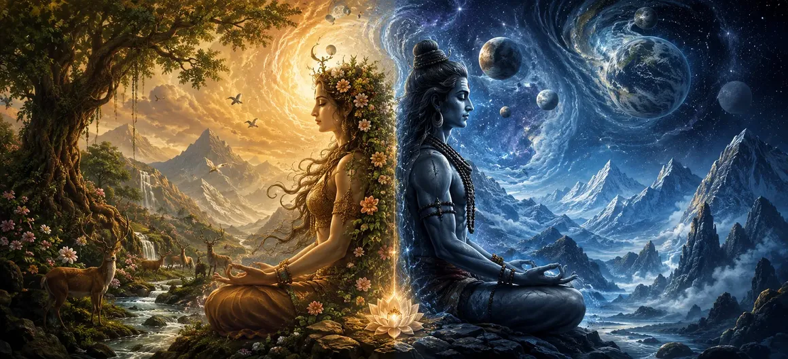

After learning about the sacred mountains and rivers that adorn creation, the sages desired to understand the deeper principles underlying existence itself. They had heard of worlds, living beings, Dharma, cosmic cycles, and holy places, yet one profound question remained unanswered: What are the fundamental forces through which creation comes into being and consciousness experiences the universe?
The Shiva Purana reveals that behind all manifested existence stand two eternal principles—Prakriti and Purusha. These are not merely philosophical concepts but divine realities that explain the relationship between matter and consciousness, creation and awareness, manifestation and the eternal witness. Understanding them is essential for comprehending the true nature of the universe.
सृष्टि को सुशोभित करने वाले पवित्र पर्वतों और नदियों के विषय में जानने के बाद, ऋषियों की इच्छा अस्तित्व के मूल में स्थित गहन सिद्धांतों को समझने की हुई। उन्होंने लोकों, जीवों, धर्म, ब्रह्मांडीय चक्रों और पवित्र स्थलों के बारे में सुना था, फिर भी एक गहन प्रश्न अनुत्तरित था: वे मूल शक्तियाँ कौन-सी हैं जिनके माध्यम से सृष्टि अस्तित्व में आती है और चेतना इस ब्रह्मांड का अनुभव करती है?
शिव पुराण प्रकट करता है कि समस्त व्यक्त अस्तित्व के पीछे दो शाश्वत सिद्धांत स्थित हैं—प्रकृति और पुरुष। ये केवल दार्शनिक अवधारणाएँ नहीं, बल्कि वे दिव्य वास्तविकताएँ हैं जो पदार्थ और चेतना, सृष्टि और जागरूकता, अभिव्यक्ति और शाश्वत साक्षी के संबंध को समझाती हैं। ब्रह्मांड के वास्तविक स्वरूप को समझने के लिए इनका ज्ञान आवश्यक है।
The sages were taught that Prakriti represents the dynamic power of manifestation—the source of matter, energy, forms, and all observable phenomena. Purusha, on the other hand, represents pure consciousness, the eternal witness that remains untouched by change. Neither principle can fully express itself without the other. Together they make possible the existence of the universe and all experiences within it.
This chapter explores how these two divine realities interact, how creation emerges through their relationship, and how understanding their nature leads seekers toward spiritual wisdom and liberation. As the sages listened attentively, they prepared to receive one of the most profound teachings contained within the Shiva Purana.
ऋषियों को बताया गया कि प्रकृति अभिव्यक्ति की गतिशील शक्ति है—पदार्थ, ऊर्जा, रूपों और सभी दृश्य घटनाओं का स्रोत। दूसरी ओर, पुरुष शुद्ध चेतना का प्रतिनिधित्व करता है, वह शाश्वत साक्षी जो परिवर्तन से अछूता रहता है। इनमें से कोई भी सिद्धांत दूसरे के बिना स्वयं को पूर्ण रूप से व्यक्त नहीं कर सकता। दोनों मिलकर ब्रह्मांड और उसमें होने वाले सभी अनुभवों को संभव बनाते हैं।
यह अध्याय बताता है कि ये दोनों दिव्य वास्तविकताएँ किस प्रकार परस्पर कार्य करती हैं, उनके संबंध से सृष्टि कैसे प्रकट होती है और उनके स्वरूप को समझने से साधक आध्यात्मिक ज्ञान और मुक्ति की ओर कैसे अग्रसर होता है। ऋषि ध्यानपूर्वक सुन रहे थे और शिव पुराण में निहित एक अत्यंत गहन उपदेश को ग्रहण करने के लिए तैयार थे।
Prakriti is described as the primordial source of all material existence. From it arise the elements, the senses, the mind, and the countless forms that populate the universe. Everything that can be seen, touched, measured, or experienced belongs to the domain of Prakriti.
Although Prakriti appears in countless forms, its essence remains one. It is the divine creative power through which the universe manifests and evolves according to the will of the Supreme Lord.
प्रकृति को समस्त भौतिक अस्तित्व का आदिम स्रोत बताया गया है। इसी से तत्व, इंद्रियाँ, मन और ब्रह्मांड में विद्यमान असंख्य रूप उत्पन्न होते हैं। जिसे देखा, छुआ, मापा या अनुभव किया जा सकता है, वह प्रकृति के क्षेत्र में आता है।
यद्यपि प्रकृति असंख्य रूपों में दिखाई देती है, उसका सार एक ही रहता है। यह वह दिव्य सृजनात्मक शक्ति है जिसके माध्यम से परमेश्वर की इच्छा के अनुसार ब्रह्मांड प्रकट और विकसित होता है।
Purusha is pure consciousness, eternal and unchanging. Unlike Prakriti, it does not act, transform, or evolve. It simply witnesses all phenomena while remaining beyond the influence of material existence.
The sages learned that Purusha is the silent observer within every being. It is through the presence of Purusha that awareness, intelligence, and spiritual perception become possible.
पुरुष शुद्ध, शाश्वत और अपरिवर्तनशील चेतना है। प्रकृति के विपरीत, वह न कर्म करता है, न रूपांतरित होता है और न विकसित होता है। वह केवल सभी घटनाओं का साक्षी रहता है और भौतिक अस्तित्व के प्रभाव से परे रहता है।
ऋषियों ने जाना कि पुरुष प्रत्येक जीव के भीतर स्थित मौन साक्षी है। पुरुष की उपस्थिति के कारण ही जागरूकता, बुद्धि और आध्यात्मिक अनुभूति संभव होती है।
The Shiva Purana explains that neither Prakriti nor Purusha alone can produce the manifested universe. Prakriti possesses the power to create forms, but without consciousness those forms would remain lifeless. Purusha provides awareness, but without Prakriti there would be nothing to experience.
Through their association, the universe becomes a living reality. Matter gains animation, consciousness gains experience, and creation unfolds according to divine purpose.
शिव पुराण समझाता है कि केवल प्रकृति या केवल पुरुष से व्यक्त ब्रह्मांड की उत्पत्ति नहीं हो सकती। प्रकृति में रूपों की रचना करने की शक्ति है, पर चेतना के बिना वे रूप निर्जीव रहेंगे। पुरुष जागरूकता प्रदान करता है, पर प्रकृति के बिना अनुभव करने के लिए कुछ भी नहीं होगा।
इन दोनों के संयोग से ब्रह्मांड एक जीवंत वास्तविकता बन जाता है। पदार्थ में चेतना का संचार होता है, चेतना अनुभव प्राप्त करती है और सृष्टि दिव्य उद्देश्य के अनुसार आगे बढ़ती है।
At the beginning of manifestation, Prakriti existed in a perfectly balanced state. Its latent energies remained dormant until the divine influence of Purusha initiated the first movement toward creation.
From this subtle interaction emerged the processes through which the universe would gradually unfold. The sages understood that all creation begins not with conflict or accident but with the harmonious relationship between consciousness and creative power.
सृष्टि के आरंभ में प्रकृति पूर्ण संतुलन की अवस्था में विद्यमान थी। उसकी सुप्त शक्तियाँ निष्क्रिय थीं, जब तक कि पुरुष के दिव्य प्रभाव ने सृष्टि की ओर प्रथम गति को प्रेरित नहीं किया।
इस सूक्ष्म अंतःक्रिया से वे प्रक्रियाएँ उत्पन्न हुईं जिनके माध्यम से ब्रह्मांड क्रमशः प्रकट होने लगा। ऋषियों ने समझा कि समस्त सृष्टि संघर्ष या संयोगवश नहीं, बल्कि चेतना और सृजनात्मक शक्ति के सामंजस्यपूर्ण संबंध से आरंभ होती है।
The sages were taught that Prakriti expresses itself through three fundamental qualities known as the Gunas: Sattva, Rajas, and Tamas. These qualities influence all aspects of creation and determine the characteristics of beings, actions, and experiences.
Sattva promotes harmony and wisdom, Rajas generates activity and desire, and Tamas produces inertia and ignorance. Through the interaction of these three Gunas, the diversity of the universe comes into existence.
ऋषियों को बताया गया कि प्रकृति तीन मूलभूत गुणों के माध्यम से अभिव्यक्त होती है, जिन्हें गुण कहा जाता है: सत्त्व, रजस् और तमस्। ये गुण सृष्टि के सभी पक्षों को प्रभावित करते हैं और जीवों, कर्मों तथा अनुभवों के स्वरूप को निर्धारित करते हैं।
सत्त्व सामंजस्य और ज्ञान को बढ़ाता है, रजस् गतिविधि और इच्छा को उत्पन्न करता है तथा तमस् जड़ता और अज्ञान को जन्म देता है। इन तीनों गुणों की परस्पर क्रिया से ब्रह्मांड की विविधता अस्तित्व में आती है।
Sattva is the quality of clarity, harmony, truth, and spiritual awareness. When Sattva predominates, the mind becomes peaceful, knowledge flourishes, and devotion grows naturally.
The sages learned that cultivating Sattva helps seekers move closer to divine realization. Through righteous conduct, self-discipline, and devotion, one gradually strengthens this uplifting quality.
सत्त्व स्पष्टता, सामंजस्य, सत्य और आध्यात्मिक जागरूकता का गुण है। जब सत्त्व प्रधान होता है, तब मन शांत होता है, ज्ञान विकसित होता है और भक्ति स्वाभाविक रूप से बढ़ती है।
ऋषियों ने जाना कि सत्त्व का संवर्धन साधक को दिव्य साक्षात्कार के निकट ले जाता है। सदाचरण, आत्मसंयम और भक्ति के द्वारा मनुष्य इस उत्थानकारी गुण को धीरे-धीरे सुदृढ़ करता है।
Rajas is the force of movement, ambition, and activity. It motivates beings to act, create, and pursue goals. Tamas, by contrast, brings stability, rest, and resistance to change, though in excess it can lead to ignorance and attachment.
The Shiva Purana explains that all three Gunas are necessary for the functioning of creation. The challenge for spiritual seekers is not to destroy them but to understand and transcend their influence through wisdom and devotion.
रजस् गति, महत्वाकांक्षा और गतिविधि की शक्ति है। यह जीवों को कार्य करने, सृजन करने और अपने लक्ष्यों का अनुसरण करने के लिए प्रेरित करता है। इसके विपरीत, तमस् स्थिरता, विश्राम और परिवर्तन के प्रतिरोध को उत्पन्न करता है, यद्यपि इसकी अधिकता अज्ञान और आसक्ति का कारण बन सकती है।
शिव पुराण बताता है कि सृष्टि के संचालन के लिए तीनों गुण आवश्यक हैं। आध्यात्मिक साधकों के लिए चुनौती उन्हें नष्ट करना नहीं, बल्कि ज्ञान और भक्ति के माध्यम से उनके प्रभाव को समझना और उससे ऊपर उठना है।
While Prakriti continuously changes through the action of the Gunas, Purusha remains forever unchanged. It observes every experience without becoming bound by them. Pleasure and pain, gain and loss, creation and dissolution all occur before the witnessing consciousness.
The sages realized that liberation becomes possible when one recognizes the distinction between the changing activities of Prakriti and the eternal nature of Purusha. This understanding marks an important step on the path toward spiritual freedom.
जबकि प्रकृति गुणों की क्रिया से निरंतर बदलती रहती है, पुरुष सदा अपरिवर्तित रहता है। वह प्रत्येक अनुभव को देखता है, पर उनसे बंधता नहीं। सुख और दुःख, लाभ और हानि, सृष्टि और प्रलय—ये सभी साक्षी चेतना के सामने घटित होते हैं।
ऋषियों ने समझा कि मुक्ति तब संभव होती है जब मनुष्य प्रकृति की परिवर्तनशील गतिविधियों और पुरुष के शाश्वत स्वरूप के बीच का भेद पहचान लेता है। यह बोध आध्यात्मिक स्वतंत्रता के मार्ग पर एक महत्वपूर्ण चरण है।
The sages asked why beings experience suffering if their true nature is connected to the eternal Purusha. They were told that bondage arises when consciousness identifies itself completely with the activities of Prakriti. The soul begins to regard temporary forms, desires, and experiences as its true identity.
Through this mistaken identification, beings become attached to pleasure and fearful of loss. Thus they remain bound within the cycle of birth, death, and rebirth until higher wisdom awakens within them.
ऋषियों ने पूछा कि यदि जीवों का वास्तविक स्वरूप शाश्वत पुरुष से जुड़ा है, तो वे दुःख का अनुभव क्यों करते हैं। उन्हें बताया गया कि बंधन तब उत्पन्न होता है जब चेतना स्वयं को पूरी तरह प्रकृति की गतिविधियों के साथ एक मान लेती है। आत्मा अस्थायी रूपों, इच्छाओं और अनुभवों को अपनी वास्तविक पहचान समझने लगती है।
इस मिथ्या पहचान के कारण जीव सुख से आसक्त और हानि से भयभीत हो जाते हैं। इस प्रकार उच्च ज्ञान के जागृत होने तक वे जन्म, मृत्यु और पुनर्जन्म के चक्र में बंधे रहते हैं।
Liberation becomes possible when one recognizes the distinction between Prakriti and Purusha. The seeker gradually understands that the body, mind, and emotions belong to the changing realm of Prakriti, while the true Self remains the eternal witness.
Through devotion, meditation, self-discipline, and divine knowledge, this realization becomes firm. The soul then rises above attachment and moves toward freedom and union with the Supreme Lord.
मुक्ति तब संभव होती है जब मनुष्य प्रकृति और पुरुष के बीच का भेद पहचान लेता है। साधक धीरे-धीरे समझता है कि शरीर, मन और भावनाएँ प्रकृति के परिवर्तनशील क्षेत्र से संबंधित हैं, जबकि वास्तविक आत्मा शाश्वत साक्षी है।
भक्ति, ध्यान, आत्मसंयम और दिव्य ज्ञान के माध्यम से यह अनुभूति दृढ़ होती जाती है। तब आत्मा आसक्ति से ऊपर उठकर स्वतंत्रता और परमेश्वर के साथ एकत्व की ओर अग्रसर होती है।
Although Prakriti and Purusha are fundamental principles of existence, the Shiva Purana teaches that Lord Shiva transcends both. He is the supreme reality from whom these principles originate and through whom they function.
Prakriti manifests His creative power, while Purusha reflects His eternal consciousness. Yet the Supreme Lord remains infinitely greater than either, existing beyond all limitations and distinctions.
यद्यपि प्रकृति और पुरुष अस्तित्व के मूलभूत सिद्धांत हैं, शिव पुराण सिखाता है कि भगवान शिव दोनों से परे हैं। वे परम सत्य हैं, जिनसे इन सिद्धांतों की उत्पत्ति होती है और जिनके द्वारा वे कार्य करते हैं।
प्रकृति उनकी सृजनात्मक शक्ति को प्रकट करती है, जबकि पुरुष उनकी शाश्वत चेतना का प्रतिबिंब है। फिर भी परमेश्वर दोनों से अनंत रूप से महान हैं और सभी सीमाओं तथा भेदों से परे विद्यमान हैं।
Upon hearing these teachings, the sages gained a deeper understanding of creation and consciousness. They realized that all experiences within the universe arise through the interaction of Prakriti and Purusha, yet both ultimately rest upon the Supreme Lord.
Filled with gratitude and reverence, they praised Lord Shiva as the source of wisdom, liberation, and eternal truth. Their hearts became peaceful as they contemplated the profound mystery of existence.
इन शिक्षाओं को सुनकर ऋषियों को सृष्टि और चेतना की गहन समझ प्राप्त हुई। उन्होंने जाना कि ब्रह्मांड के सभी अनुभव प्रकृति और पुरुष की परस्पर क्रिया से उत्पन्न होते हैं, फिर भी अंततः दोनों परमेश्वर में ही स्थित हैं।
कृतज्ञता और श्रद्धा से परिपूर्ण होकर उन्होंने भगवान शिव को ज्ञान, मुक्ति और शाश्वत सत्य के स्रोत के रूप में प्रणाम किया। अस्तित्व के गहन रहस्य पर मनन करते हुए उनके हृदय शांत हो गए।
"Prakriti creates the forms of existence, Purusha witnesses their play, but Lord Shiva remains the eternal reality beyond both—unchanging, infinite, and supreme." “प्रकृति अस्तित्व के रूपों की रचना करती है, पुरुष उनकी लीला का साक्षी रहता है, पर भगवान शिव दोनों से परे शाश्वत वास्तविकता हैं—अपरिवर्तनशील, अनंत और परम।”
The profound mystery of Prakriti and Purusha has now been revealed. Continue to the next chapter to discover how Lord Shiva bestows His eternal blessing upon creation and sustains the universe through His infinite grace. प्रकृति और पुरुष का गहन रहस्य अब प्रकट हो चुका है। अगले अध्याय में आगे बढ़ें और जानें कि भगवान शिव अपनी शाश्वत कृपा से सृष्टि को किस प्रकार आशीर्वाद प्रदान करते हैं और अपनी अनंत अनुकंपा से ब्रह्मांड को धारण करते हैं।